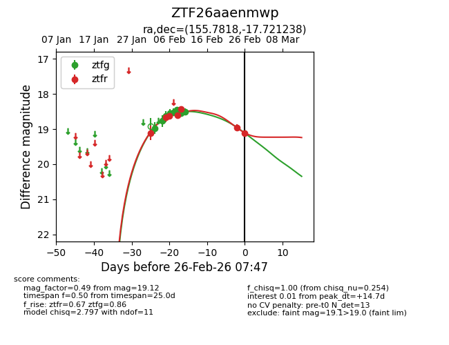
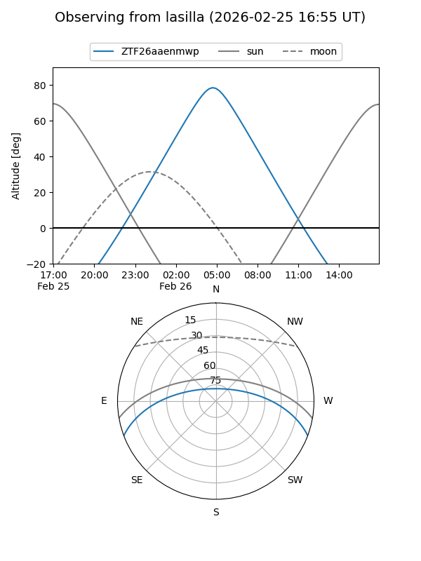
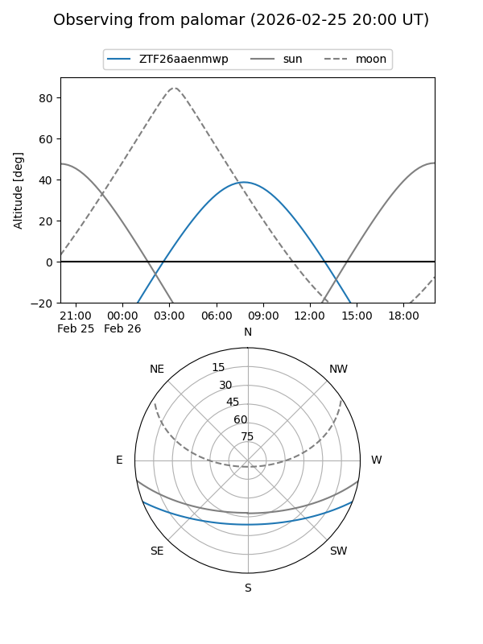
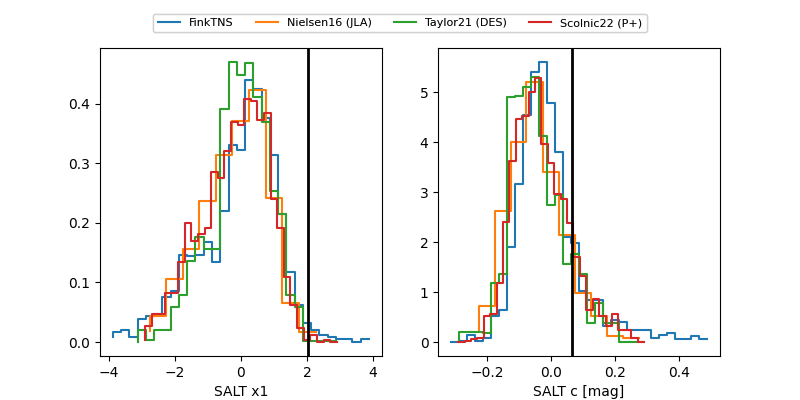

ZTF26aaenmwp
Target ZTF26aaenmwp at 2026-02-26 07:48
Aliases and brokers:
FINK: link
Lasair: link
ALeRCE: link
alt names
ZTF26aaenmwp (ztf,fink_ztf)
Coordinates:
equatorial (ra, dec) = 155.7818,-17.72124
equatorial (HMS+DMS) = 10:23:07.64,-17:43:16.46
galactic (l, b) = (260.0052,+32.51781)
Flags:
Photometry:
last ztfg=18.50, ztfr=19.12
8 ztfg, 7 ztfr detections
Lightcurve

Visibility


Additional plots
